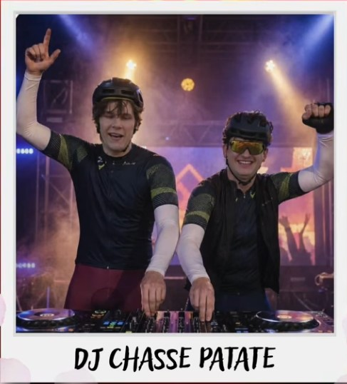
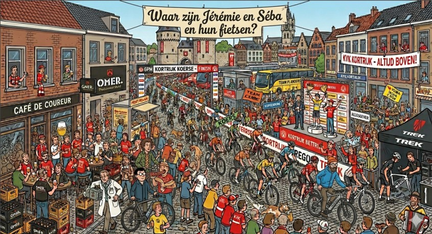

De Saloncoureurs
Site
Na een knalstart in maart lag de lat voor april hoog, zéér hoog. Onze eigen ‘Flandriens’ lieten er geen gras over groeien: op de eerste zaterdag stoften vier coureurs hun kuiten af voor de Ronde van Vlaanderen. Een heroïsche start van de maand april.
Laten we eerlijk zijn: aan de weergoden lag het niet. Toch bleef de grote massa blijkbaar liever de buienradar bestuderen dan de bandenspanning op peil te zetten. In de maand April werd helaas geen enkele groepsrit (met >5 saloncoureurs) genoteerd.
Maar er is ook reden tot optimisme: de magische kaap van de 10.000 km is gerond! Op naar mei, een maand die hopelijk evenveel sportieve glans als 'minder sportieve' ambiance brengt. Met de Dame Rouge als voorgerecht en de Rikolto-rit als dessert belooft het smullen te worden. En geen zorgen: tijdens Sinksen vullen we de krachten (en de glazen) weer ruimschoots aan!
Wout van Aert: Stak er in Parijs-Roubaix met kop en schouders bovenuit. (Nee, niet de onze, de andere Wout). Een voorbeeld voor alle Saloncoureurs!


Zoek de fietsen en hun eigenaars op deze foto...
"Dikke zaaien is dikke maaien"
- Huisbaas Luc